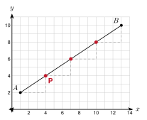

← back to the lesson
Unit 2 Summary
Unit Summary - Unit 2: The Pythagorean Theorem and the Coordinate Plane - DHS Geometry
NameDatePeriod
2.1Square Roots and Simplifying Radicals
- A perfect square is the square of a whole number: 1, 4, 9, 16, 25, 36, 49, 64, 81, 100, 121, 144, 169, 196, 225.
- 49 = 7. In geometry we use the positive root.
- To estimate 50: 72 = 49 and 82 = 64, so it is between 7 and 8. Test the middle, 7.52 = 56.25. Since 50 < 56.25, it is closer to 7.
- To simplify, take out the largest perfect square factor: 72 = 36 · 2 = 62.
- Multiply: 23 · 56 = 1018 = 302. Add like radicals: 32 + 52 = 82.
- Rationalize: 62 = 622 = 32.
- 9 + 16 is not 9 + 16.
Example: Simplify 48 + 12. 43 + 23 = 63
2.2The Pythagorean Theorem and Its Converse
- In a right triangle, the legs make the right angle. The hypotenuse is across from it and is the longest side.
- Pythagorean theorem: a2 + b2 = c2, where c is the hypotenuse.
- Pythagorean triples: 3-4-5, 5-12-13, 8-15-17, 7-24-25, and their multiples.
- Converse: let c be the longest side. If a2 + b2 = c2, the triangle is right. If a2 + b2 > c2, it is acute. If a2 + b2 < c2, it is obtuse.
- Triangle inequality: the two shorter sides must add to more than the longest side.

Example: Legs 6 and 8. Find c. 36 + 64 = 100, so c = 10
2.3The Pythagorean Theorem in the Real World
- Always: draw and label the right triangle, solve, and answer in a sentence with units.
- Squaring a corner: mark 3 and 4. The marks must be 5 apart. Check a rectangle by its diagonal.
- Ladders: the ladder is the hypotenuse. 4-to-1 rule: the base is at least height ÷ 4 from the wall.
- Screens: the size is the diagonal. Width and height are the legs.
- Boxes: floor diagonal first, then the box diagonal.
Example: A 13 ft ladder has its base 5 ft from a wall. How high does it reach? 169 − 25 = 12 ft
2.4Distance on the Coordinate Plane
- Same y: distance is |x2 − x1|. Same x: distance is |y2 − y1|.
- Slanted: draw a right triangle. The legs are the horizontal and vertical changes.
- Distance formula: d = (x2 − x1)2 + (y2 − y1)2.
- Use it to compare distances, to check for equal sides, and to find a missing coordinate (there can be two answers).

Example: Distance from (1, 2) to (5, 5). 42 + 32 = 5
2.5Midpoint
- Midpoint formula: M = (x1 + x22, y1 + y22). Average the x's and average the y's.
- Missing endpoint: take the same step again from the midpoint, or solve x1 + x2 = xM.
- The center of a circle is the midpoint of a diameter.
- To check that M is a midpoint, show AM = MB and that A, M, B are collinear.
Example: Midpoint of (−2, 4) and (6, −2). (2, 1)
2.6Slope, Parallel Lines, and Perpendicular Lines
- Slope: m = y2 − y1x2 − x1. Horizontal lines have slope 0. Vertical lines have undefined slope.
- Parallel lines have equal slopes (and are different lines).
- Perpendicular lines have slopes that are opposite reciprocals. The product is −1.
- To write a line through a point: find the slope, put the point in y = mx + b, solve for b.
Example: A line has slope 34. Give the slope of a perpendicular line. −43
2.7Dividing a Segment in a Ratio
- Ratio a:b from A to B: the point is k = aa + b of the way.
- P = (x1 + k(x2 − x1), y1 + k(y2 − y1)).
- Order matters. The same ratio from B to A gives a different point.
- Check with distance: AP = k · AB.

Example: Ratio 1:3 from A(1, 2) to B(13, 10). k = 14. P = (4, 4)
2.8Perimeter and Area on the Coordinate Plane
- Perimeter: add the side lengths. Use the distance formula for slanted sides.
- Area: rectangle bh, triangle 12bh, trapezoid 12(b1 + b2)h.
- Box method: area of the bounding box minus the corner triangles.
- Slanted rectangle or square: length times width from the distance formula. Check with the box method.
Example: Area of the triangle with vertices (0, 0), (6, 0), (6, 8). 12(6)(8) = 24
2.9Checking Shapes with Coordinates
- Computation as proof: use slopes and distances to show a fact for sure. End with "Because ..., the shape is a ...".
- Right triangle: two sides have slopes with product −1, or the side squares satisfy a2 + b2 = c2.
- Isosceles: two equal sides. Equilateral: three equal sides.
- Looks vs is: a shape that looks like a square can be a rhombus. Check slopes and lengths. A counterexample shows a rule is false.
- Fourth vertex of a parallelogram ABCD: D = A + C − B.
Example: What do you check to show a parallelogram is a rectangle? Show two sides at a corner have slopes with a product of −1.
| Shape | What to check |
|---|---|
| Parallelogram | Opposite sides have equal slopes |
| Rectangle | A parallelogram with a right angle (slopes with product −1) |
| Rhombus | Four equal sides |
| Square | A rectangle and a rhombus |